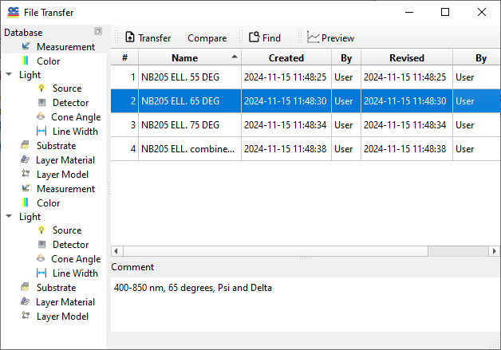

File Transfer dialog
The File Transfer utility allows for exchanging data files between different Problem directories. Data is always transferred to the current directory. Before you enter the File Transfer mode, you will be prompted to select a data source in the Select Directory window.
You can conveniently transfer multiple database files—such as Measurement, Substrate, and others—simultaneously in the File Transfer dialog of the OptiLayer software. To select multiple files, you can use your mouse in combination with the Ctrl and Shift keys, which allow for various multi-selection options, similar to file selection in other Windows applications. Once you have selected the desired files, simply press the Transfer button in the dialog to initiate and complete the transfer operation. This feature helps streamline the process, making it easier to manage and transfer your database files efficiently.

The Find command activates the search feature, simplifying the selection of files using a search pattern.
You can request another type of data sorting using the Sort button or create a text output of the data file using the Output button. If you want to transfer additional data from the same directory, you don’t need to restart the file transfer; simply select the desired item and repeat the transfer operation. However, to change the source directory, you must close the File Transfer window and restart the file transfer operation from the main menu.
The Quit button closes this window.